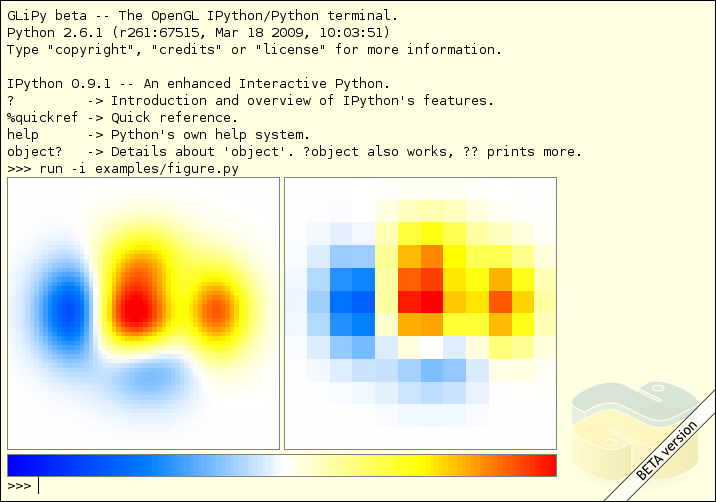
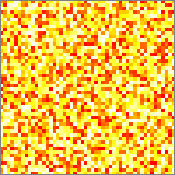
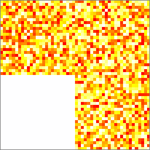
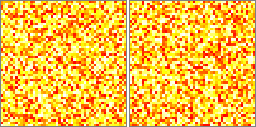
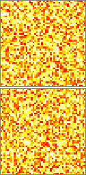
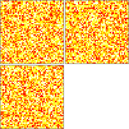
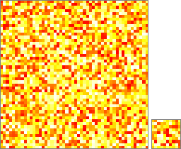
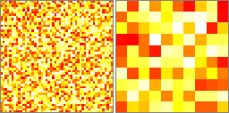
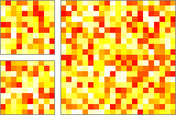
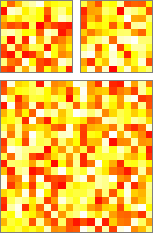

GliPy, The OpenGL IPython/Python terminal
Introduction
One of Python's most useful features when associated with the numpy scientific package is its interactive interpreter. This system allows very fast testing of ideas without the overhead of creating test files as is typical in most programming languages. However, the interpreter supplied with the standard Python distribution is somewhat limited for extended interactive use since it does not provide visualization capabilities. One can use additonal packages such as matplotlib or mayavi mlab package, but those are more oriented towards static visualization.
The goal of glipy is to create a comprehensive environment for interactive and exploratory computing. To support this goal, glipy has two main components:
An interactive Python terminal.
An architecture for embedding various graphical elements directly within the terminal.

Installation
Depending on your level of expertise and your resilience to bugs, you may install glipy from three different sources.
Installation using easy_install
If you have setuptools installed, the easiest way of getting glipy is to simply use easy_install:
$ easy_install glipy
That's it.
Installation from sources
If you don't want to use easy_install, or don't have it installed, just grab the latest stable build of GLiPy from here. Then do the following:
$ tar -xzf glipy.tgz $ cd glipy $ python setup.py install
If you are installing to a location (like /usr/local) that requires higher permissions, you may need to run the last command with sudo.
Installing the development version
It is also possible to install the development version of glipy from the Bazaar source code repository. To do this you will need to have Bazaar installed on your system. Then just do:
$ bzr branch lp:glipy $ cd glipy $ python setup.py install
Quick start
glipy is essentially an interactive terminal that can be started most simply by typing:
$ glipy &
There is some availble command line options that can be consulted using the -h command line option.
Terminal
While you may think that you're face to a regular terminal once you started glipy, it is indeed not the fact. The terminal is a very light emulation of a regular terminal using the pyglet package. Because of this emulation, most usual key bindings need to be emulated while some others are just not emulated at all. The following readline key bindings are currently supported:
- Control-A
- Move text cursor to the start of the current line
- Control-B
- Move text cursor backward one character
- Control-C
- Abord current command line
- Control-D
- Exit if command line is empty, else delete forward character
- Control-E
- Move text cursor to the end of the current line
- Control-F
- Move text cursor forward one character
- Control-K
- Kill line from cursor position
- Control-L
- Clear terminal but the prompt line
- Control-Y
- Yank kill buffer at cursor position
- Tab
- Show possible completions fo the command line
- Arrow up
- Previous history command line
- Arrow down
- Next history command line
Editor
glipy provides a very rudimentary text editor that can be invoked using the ed command when using the IPython shell. You can exit the editor anytime by pressing the escape key when the mouse pointer is over the editor sub-window. This saves the edited file with the provided filename and returns to the shell.
Basic numpy support
One of the main interest of glipy is to offer support for various graphic elements that can be embedded directly within the terminal. The numpy element offers support for the visualization of one to several numpy arrays. If you want to quickly test glipy numpy support, just type:
>>> numpy.random.random((50,50))
from within the terminal and you should see the following:

What is happening behind the scene is that glipy provides numpy with a string representation of an array (using the numpy.set_string_function()) and uses this function (figure) to actually display the array using a set of default parameters (and returns an empty string).
The displayed figure is not a simple image but a live representation of the array. If you modify the array, you'll see immediate changes in the graphic representation as well. For example, you can try:
>>> z = numpy.random.random((50,50)) >>> z >>> z[0:25,0:25] = 0
and observe that changes are taken into account immediately.

When the mouse pointer is over the figure, you can interact in different ways:
- Mouse scroll button
- Zoom in and out the figure
- Shift + mouse left button
- Move the figure
- Mouse left button click
- If you click on an array, this will send a on_select event with the related array and coordinates. You can add a pyglet-like event handler to catch this event from within your code.
- Escape
- Center the figure if not centered, else, reset zoom level to 1.0.
- Control-S
- Save the figure using filename pattern screenshot-%2d.png
Extended numpy support
While the direct display of arrays is quite convenient, there are of course some cases where one needs more control over arrays layout or colors. glipy provides a way to do that using the figure command.
Layout
The basic usage is quite simple:
>>> z1 = numpy.random.random((50,50)) >>> z2 = numpy.random.random((50,50)) >>> fig = figure(z1, z2)
The above command displays z1 and z2 side by side:

but if you prefer to have z1 on top of z2, you can also write:
>>> fig = figure([z2], [z1])
and get:

Similarly, if you need to display several arrays on top of each others, you can write:
>>> z1 = numpy.random.random((50,50)) >>> z2 = numpy.random.random((50,50)) >>> z3 = numpy.random.random((50,50)) >>> fig = figure([z1], [z2,z3])
and get:

If you look more closely at the displayed arrays, you will notice that any cell of any arrays has the exact same size as any other cell. This is the result of the packing algorithm that computes place and size of for each array. But if arrays are of different sizes, the result may not pleasant or convenient like in the following example:
>>> z1 = numpy.random.random((50,50)) >>> z2 = numpy.random.random((10,10)) >>> fig = figure(z1, z2)
One can see that z2 may be too small:

One way to solve the problem is to indicate that the z2 array must be zoomed:
>>> z1 = numpy.random.random((50,50)) >>> z2 = numpy.random.random((10,10)) >>> fig = figure(z1, (z2,5.0))
and the new result will be:

As you may have guessed by now (if you read the whole document), the figure command considers that each list represents a line of arrays to be displayed and the number of lists gives the number of rows. Each array is then placed in this meta-array at its natural position. However, this prevents any array to span several rows or several columns of the meta-array. One way to partly solve the problem is to indicate that a specific array span several rows or several columns:
>>> z1 = numpy.random.random((21,21))
>>> z2 = numpy.random.random((10,10))
>>> z3 = numpy.random.random((10,10))
>>> fig = figure([z2, z1],
[z3,'|'])
In this example, z1 spans two rows, indicated by the | character on the second row at the same column position as z1 in the first row.

Alternatively, you could also have written:
>>> z1 = numpy.random.random((21,21))
>>> z2 = numpy.random.random((10,10))
>>> z3 = numpy.random.random((10,10))
>>> fig = figure([z1, '-'],
[z2, z3])
to get:

Finally, the default padding between each array is exaclty one cell but you can change it by giving a new pad when creating the figure.
Colors
Together with the arrays layout, you can also indicate what colormap to use among those availables:
- IceAndFire
- Ice
- Fire
- Hot
- Grey
- DarkRed
- DarkGreen
- DarkBlue
- LightRed

- LightGreen
- LightBlue
You can of course create your own colormap, just have a look at colormap.py to see how it can be done. For each colormap, you can indicate a specific color for under value, over value and bad value and set the minimum and maximum value to be represented (default is -1,+1).
When no colormap is indicated, the default colormap cmap is used. This is especially impotant for direct display of arrays.